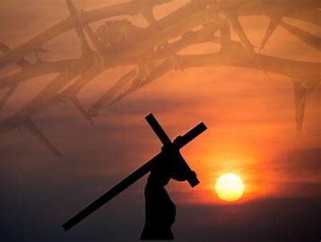
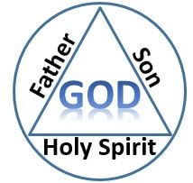

who is jesus christ?
Who is Jesus Christ? Jesus is the Holy Son of God. He is the Way the Truth and the Light. He came to earth to be a witness for his Father's Love and to teach Forgiveness. The name Jesus brings associations such as Peace, Miracles, Love and Healing. His healing scriptures were full of parables and stories which helped those with ...

who is holyspirit?
Invisible, perhaps, but real. The Holy Spirit is probably the least understood person of the Trinity. Among the myths and the mistaken concepts that are shared, He has been described as a force, a ghost, and a second-class or replacement god. He is confused with the manifestations themselves, and has even been presented as an incidental figure that appears momentarily. Nothing could be further from the truth. It is vital for the church to know the Spirit, learn to relate to Him, and understand how He manifests Himself.
trinity
The word “trinity” is a term used to denote the Christian doctrine that God exists as a unity of three distinct persons: Father, Son, and Holy Spirit. Each of the persons is distinct from the other yet identical in essence. In other words, each is fully divine in nature, but each is not the totality of the other persons of the Trinity. Each has a will, loves, and says “I” and “You” when speaking. The Father is not the same person as the Son, who is not the same person as the Holy Spirit, and who is not the same person as the Father. Each is divine, yet there are not three gods but one God. There are three individual subsistences or persons. The word “subsistence” means something that has a real existence. The word “person” denotes individuality and self-awareness. The Trinity is three of these though the latter term has become the dominant one used to describe the individual aspects of God known as the Father, the Son, and the Holy Spirit...

"if you declare with your mouth"jesus is lord"and believe in your heart that God raised him from the dead you will be saved"
"romans 10:9"